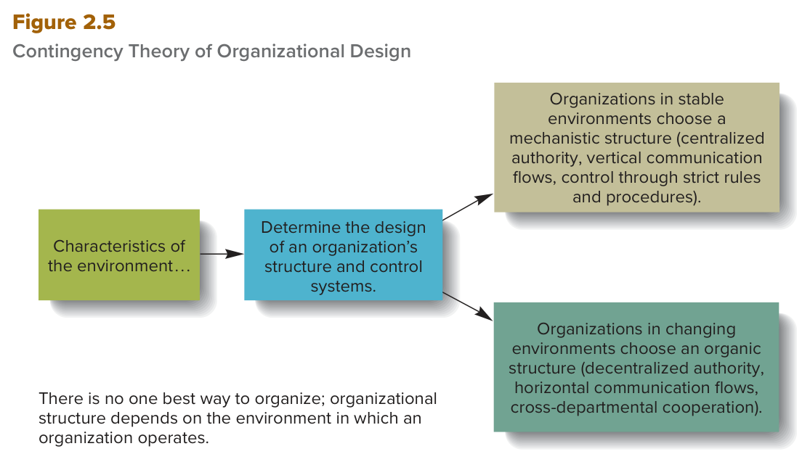

الفصل الثاني — علم الإدارة وبيئة المنظمة
MGT 102 · Chapter 2 · القسم ٤ من ٤:
Management Science and the Organizational Environment
الهدف LO2-5: Explain the contributions of management science to the efficient use of organizational resources.
الهدف LO2-6: Explain why the study of the external environment and its impact on an organization has become a central issue in management thought.
هذا آخر قسم في الفصل، وفيه آخر نظريتين في الخط الزمني
في الأقسام الثلاثة اللي فاتت، كل النظريات كانت تبص جوّا المنظمة: المهمة (Taylor)، الهيكل (Weber وFayol)، الناس وسلوك المدير (Follett، Hawthorne، McGregor). هنا بيتغيّر الاتجاه مرتين: أول مرة نوجّه الأرقام والرياضيات على الموارد (management science theory)، وثاني مرة نطلع بالنظر برّا حدود المنظمة كلها (organizational environment theory).
هذا القسم هو اللي بيعطيك أشهر جملة في الفصل: there is no one best way to organize. وهو كمان اللي فيه شكلين من أكثر الأشكال اللي تُسأل: Figure 2.4 وFigure 2.5. ذاكر الشكلين زين — الاختبار يعطيك مرحلة ويسألك وش فيها، أو يعطيك وصف بيئة ويسألك أي هيكل.
أساليب كمّية صارمة (rigorous quantitative techniques) تساعد المدير يستفيد من موارد المنظمة لأقصى حد — وهي امتداد معاصر لـscientific management.
الكتاب يوصف management science theory بأنها أسلوب معاصر (contemporary approach) في الإدارة، يركّز على استخدام أساليب كمّية صارمة عشان يستفيد المدير من الموارد لأقصى حد في إنتاج السلع والخدمات.
وأهم جملة في هذا الجزء: الكتاب يقول هي امتداد معاصر (contemporary extension) لـscientific management، لأن تايلور كمان كان ياخذ مدخل كمّي لقياس خلطة العامل–المهمة (worker–task mix) عشان يرفع الكفاءة. يعني الاثنين من نفس العائلة — بس management science أحدث وأدواتها رياضية متقدمة.
وtechnology (التقنية) لها أثر كبير على كل أنواع الممارسات الإدارية، وتستمر في التأثير على الأدوات اللي يستخدمها المدير في اتخاذ القرار.
علوم الإدارة فيها فروع كثيرة، وكل فرع يتعامل مع مجموعة اهتمامات محددة. الكتاب يذكر ثلاثة فروع (three branches) — احفظ العدد والأسماء:
| # | الفرع | وش يسوي | ودور التقنية فيه |
|---|---|---|---|
| ١ | Quantitative management الإدارة الكمّية |
تستخدم أساليب رياضية تساعد المدير يقرر: كم مخزون يمسك في أوقات مختلفة من السنة، وين يبني مصنع جديد، وكيف يستثمر رأس المال المالي للمنظمة بأحسن شكل. | تعطي المدير طرق جديدة ومحسّنة للتعامل مع المعلومات، فيقيّم الموقف بدقة أكبر ويقرر أحسن. |
| ٢ | Operations management إدارة العمليات |
تعطي المدير مجموعة أساليب يحلل فيها أي جانب من نظام الإنتاج (production system) في المنظمة عشان يرفع الكفاءة. | التقنية — عبر the Internet والاستخدام المتزايد لـcloud computing — تحوّل كيف يحصل المدير على المدخلات ويوزّع المنتجات النهائية. |
| ٣ | Management information systems (MISs) نظم المعلومات الإدارية |
تعطي المدير تفاصيل عن الأحداث اللي تصير جوّا المنظمة وبرّا في بيئتها كمان — معلومات حيوية لاتخاذ قرار فعّال. | تساعده يوصل لـمعلومات أكثر وأحسن، وتسمح لـمدراء أكثر في كل المستويات يشاركون في اتخاذ القرار. |
وquantitative management تحديداً تستخدم أساليب رياضية، والكتاب يعطي خمسة أمثلة عليها (such as)، احفظها زي ما هي (انتبه: linear and nonlinear programming يعدّها الكتاب عنصر واحد):
- linear and nonlinear programming — البرمجة الخطية وغير الخطية
- modeling — النمذجة
- simulation — المحاكاة
- queuing theory — نظرية الطوابير
- chaos theory — نظرية الفوضى
كل هذي الفروع الفرعية، ومعها تقنية متطورة، توفّر أدوات وأساليب يستخدمها المدير عشان يحسّن جودة قراراته ويرفع الكفاءة والفعالية.
مثال الكتاب — Toyota: طبّقت management science theory عن طريق Toyota Production System (TPS). وTPS يؤكّد على شيئين: continuous improvement in quality وthe reduction of waste through learning (التحسين المستمر في الجودة، وتقليل الهدر عبر التعلّم). وTPS كان محفّزاً رئيسياً (a major catalyst) لـ«lean revolution» في التصنيع العالمي، وشركات التصنيع حول العالم تبنّت هذي الفلسفة وكيّفتها لعملياتها.
إحالة يذكرها الكتاب: Chapter 9 يركّز على كيف تستخدم operations management ومبدأ total quality management (TQM) لتحسين الجودة والكفاءة والاستجابة للعملاء. يعني TQM مو فرع من فروع علوم الإدارة الثلاثة — هو موضوع فصل ثاني.
Management science theory is a contemporary approach to management that focuses on the use of rigorous quantitative techniques to help managers make maximum use of organizational resources to produce goods and services. In essence, management science theory is a contemporary extension of scientific management, which, as developed by Taylor, also took a quantitative approach to measuring the worker–task mix to raise efficiency.
Quantitative management uses mathematical techniques—such as linear and nonlinear programming, modeling, simulation, queuing theory, and chaos theory—to help managers decide, for example, how much inventory to hold at different times of the year, where to locate a new factory, and how best to invest an organization's financial capital. Operations management gives managers a set of techniques they can use to analyze any aspect of an organization's production system to increase efficiency. Management information systems (MISs) give managers details about events occurring inside the organization as well as in its external environment—information that is vital for effective decision making.
- management science theory ≠ scientific management. الأولى معاصرة وأدواتها رياضية متقدمة، والثانية Taylor في مطلع القرن العشرين. الكتاب يقول الأولى امتداد للثانية — احفظ العلاقة، بس لا تبدّل الاسمين.
- العدد ثلاثة فروع: quantitative management · operations management · MISs. أي خيار يضيف total quality management أو organizational learning أو behavioral management كفرع رابع = غلط.
- MIS يعطي معلومات عن الداخل والخارج — مو الداخل بس. الخيار اللي يقول only inside the organization = غلط.
- لا تخلط الوظيفتين: operations management تحلّل نظام الإنتاج، وquantitative management تحلّل القرارات بالرياضيات.
- TPS مثال على management science theory، ومرتبط بـlean revolution وTQM (فصل ٩). الخيار اللي يربط TPS بـbehavioral management = غلط.
كل القوى والظروف اللي تشتغل برّا حدود المنظمة، بس تأثّر على قدرة المدير على الحصول على الموارد واستخدامها.
الكتاب يسمّي هذي اللحظة معلماً مهماً (an important milestone) في تاريخ الفكر الإداري: لما تجاوز الباحثين دراسة كيف يأثّر المدير على السلوك جوّا المنظمة، وراحوا يشوفون كيف يدير المدير علاقة المنظمة ببيئتها الخارجية.
وش تشمل موارد البيئة التنظيمية؟ الكتاب يعدّها بوضوح:
- raw materials (المواد الخام) وskilled people (الناس المهرة) اللي تحتاجها المنظمة لإنتاج السلع والخدمات.
- دعم مجموعات — منها customers اللي يشترون هذي السلع والخدمات ويزوّدون المنظمة بـbig data الحاسمة لنجاحها المالي العام.
وفيه جملة الكتاب يحطها كـطريقة لقياس نجاح المنظمة: تشوف كم مدراؤها فعّالين في الحصول على scarce and valuable resources (موارد نادرة وقيّمة). يعني النجاح مو بس ترتيب داخلي — هو كمان قدرة على سحب موارد من برّا.
متى صارت أهمية دراسة البيئة واضحة؟ بعد تطوير open-systems theory وcontingency theory خلال الستينات (the 1960s)، وبعدين نظريات أحدث منها dynamic capabilities. وهذي الثلاثة هي بالضبط اللي جايين في المفاهيم الجاية.
An important milestone in the history of management thought occurred when researchers went beyond the study of how managers can influence behavior within organizations to consider how managers control the organization's relationship with its external environment, or organizational environment—the set of forces and conditions that operate beyond an organization's boundaries but affect a manager's ability to acquire and utilize resources.
One way of determining the relative success of an organization is to consider how effective its managers are at obtaining scarce and valuable resources. The importance of studying the environment became clear after the development of open-systems theory and contingency theory during the 1960s and other more recent theories, including dynamic capabilities.
- التعريف يقول beyond an organization's boundaries — يعني برّا الحدود. الخيار اللي يعرّف organizational environment بأنها القوى داخل المنظمة = غلط.
- البيئة تأثّر على قدرة المدير على الحصول على الموارد واستخدامها (acquire and utilize) — مو على «تحفيز الموظفين»، هذاك behavioral management.
- التواريخ: open-systems وcontingency = الستينات. وmanagement science theory = الحرب العالمية الثانية. وdynamic capabilities = أواخر التسعينات. الاختبار يبدّلها.
المنظمة تسحب موارد من بيئتها، تحوّلها لسلع وخدمات، وترجّعها لنفس البيئة عشان يشتريها العملاء — وفلوس البيع تموّل الدورة الجاية.
وحدة من أكثر النظرات تأثيراً على «كيف تتأثر المنظمة ببيئتها الخارجية» طوّرها Daniel Katz وRobert Kahn وJames Thompson في الستينات — ثلاثة أسماء، احفظ العدد والأسماء مع بعض. هذولا شافوا المنظمة كـopen system.
ليش اسمه «مفتوح»؟ لأن المنظمة تسحب من البيئة الخارجية وتتفاعل معها عشان تعيش — يعني المنظمة مفتوحة على بيئتها، مو مقفلة على نفسها.
المراحل الثلاث (three stages) بالترتيب:
- At the input stage — المنظمة تحصل على موارد زي raw materials وmoney وskilled workers لإنتاج السلع والخدمات.
- At the conversion stage — قوة العمل في المنظمة، باستخدام الأدوات والأساليب والآلات المناسبة، تحوّل المدخلات لمخرجات من سلع وخدمات جاهزة — زي السيارات، أو الهمبرغر، أو رحلات لهاواي. وهنا بالضبط تُضاف القيمة (adds value).
- At the output stage — المنظمة تطلق السلع والخدمات النهائية لبيئتها الخارجية، وهناك يشتريها العملاء ويستخدمونها عشان يشبعون حاجاتهم.
وبعدين؟ الفلوس اللي تحصّلها المنظمة من بيع مخرجاتها تخليها تحصل على موارد أكثر، والدورة تبدأ من جديد. عشان كذا الشكل دائري مو خطي.
![Figure 2.4 — The Organization as an Open System: under the heading ENVIRONMENT, three linked boxes — input stage (raw materials, money and capital, human resources; organization obtains inputs from its environment), conversion stage (machinery, computers, human skills; organization transforms inputs and adds value to them) and output stage (goods, services; organization releases outputs to its environment) — with arrows returning through a box reading sales of outputs allow organization to obtain new supplies of inputs](../img/mgt102/figure-2-4.png)
هذا Figure 2.4 في الكتاب. أول شي لاحظ الكلمة فوق: ENVIRONMENT — كل الصناديق الثلاثة تحتها، يعني البيئة محيطة بالعملية كلها مو واقفة على طرف. بعدين اقرأ الصناديق من اليسار: Input stage (Raw materials · Money and capital · Human resources) ← Conversion stage (Machinery · Computers · Human skills) ← Output stage (Goods · Services). وتحت السطر الجملة المفتاحية: Sales of outputs allow organization to obtain new supplies of inputs — يعني السهم يرجع ويقفل الدايرة. وش يُسأل عنه: «وش عناصر مرحلة المدخلات؟» و«في أي مرحلة تُضاف القيمة؟» — الجواب conversion stage، لأن جملة الصندوق نفسها تقول adds value to them.
مقابل النظام المفتوح فيه closed system: نظام مكتفي بنفسه (self-contained) وما يتأثر بالتغيرات في بيئته الخارجية.
والربط اللي يحبه الاختبار: المنظمات اللي تشتغل كنظام مغلق، وتتجاهل البيئة الخارجية، وتفشل في الحصول على المدخلات → على الأرجح بتعاني من entropy — وهي ميل النظام المغلق لفقدان قدرته على التحكم بنفسه، وبالتالي الذوبان والتفكك (to dissolve and disintegrate).
تطبيق النموذج: منظّري الإدارة يقدرون ينمذجون أنشطة أغلب المنظمات بهذي النظرة. مثال الكتاب: شركات التصنيع زي Ford وCaterpillar تشتري مدخلات زي قطع المكوّنات، والعمالة الماهرة وشبه الماهرة، والروبوتات ومعدات التصنيع المتحكم فيها بالحاسوب؛ وفي مرحلة التحويل تستخدم مهاراتها التصنيعية لتجميع المدخلات لمخرجات من السيارات والمعدات الثقيلة.
وتنبيه من الكتاب: المنافسة بين المنظمات على الموارد وحدة من عدة تحديات كبيرة لإدارة البيئة التنظيمية.
الباحثين اللي يستخدمون نظرة النظام المفتوح يهمّهم كمان سؤال ثاني: كيف تشتغل أجزاء النظام مع بعض عشان ترفع الكفاءة والفعالية. ومنظّري النظم يحبّون يقولون the whole is greater than the sum of its parts (الكل أكبر من مجموع أجزائه) — يقصدون: المنظمة تؤدّي بمستوى أعلى لما تشتغل أقسامها مع بعض بدل ما تشتغل منفصلة.
وsynergy = مكاسب الأداء اللي تطلع لما ينسّق الأفراد والأقسام أفعالهم. ونقطة مهمة: synergy ممكنة بس في نظام منظّم (an organized system).
التطبيق: استراتيجية استخدام فرق مكوّنة من ناس من أقسام مختلفة تعكس اهتمام منظّري النظم بتصميم أنظمة تنظيمية تخلق synergy، وبالتالي ترفع الكفاءة والفعالية.
These theorists viewed the organization as an open system—a system that takes in resources from its external environment and converts or transforms them into goods and services that are sent back to that environment, where they are bought by customers. At the input stage, an organization acquires resources such as raw materials, money, and skilled workers. At the conversion stage, the organization's workforce, using appropriate tools, techniques, and machinery, transforms the inputs into outputs of finished goods and services. At the output stage, the organization releases finished goods and services to its external environment.
A closed system, in contrast, is a self-contained system that is not affected by changes in its external environment. Organizations that operate as closed systems, that ignore the external environment, and that fail to acquire inputs are likely to experience entropy, which is the tendency of a closed system to lose its ability to control itself and thus to dissolve and disintegrate.
Systems theorists like to argue that the whole is greater than the sum of its parts; they mean that an organization performs at a higher level when its departments work together rather than separately. Synergy, the performance gains that result from the combined actions of individuals and departments, is possible only in an organized system.
- open system ≠ closed system ≠ entropy. entropy مو نوع نظام — هي نتيجة تصيب النظام المغلق. الخيار اللي يقول «entropy is a type of open system» = غلط.
- المراحل ثلاث بالترتيب: input → conversion → output. أي خيار يضيف «feedback stage» أو «planning stage» كمرحلة رابعة = غلط.
- القيمة تُضاف في conversion stage مو في output. وعناصر كل مرحلة في Figure 2.4 يبدّلونها: Machinery · Computers · Human skills هذي تحويل، وRaw materials · Money and capital · Human resources هذي مدخلات.
- synergy تعريفها مكاسب أداء من تنسيق الأفراد والأقسام — مو «تقليل التكاليف» ولا «زيادة التخصص». والعبارة المرتبطة فيها: the whole is greater than the sum of its parts.
- الأسماء الثلاثة Katz, Kahn, Thompson = النظام المفتوح. Burns & Stalker وLawrence & Lorsch = contingency theory. الاختبار يخلطهم لأن كلهم من الستينات.
الهيكل التنظيمي ونظام الرقابة اللي يختارهم المدير يعتمدون على (are contingent on) خصائص البيئة الخارجية اللي تشتغل فيها المنظمة.
معلم بارز ثاني في نظرية الإدارة: تطوير contingency theory في الستينات على يد Tom Burns وG. M. Stalker في بريطانيا، وPaul Lawrence وJay Lorsch في الولايات المتحدة — أربعة أسماء في زوجين، احفظ مين وين.
والرسالة الحاسمة (the crucial message) للنظرية جملة وحدة، احفظها بالإنجليزي حرف بحرف: there is no one best way to organize.
حسب النظرية، خصائص البيئة تأثّر على قدرة المنظمة على الحصول على الموارد. وعشان تعظّم احتمال الوصول للموارد، لازم المدير يخلي كل قسم ينظّم شغله ويراقبه بالطريقة اللي تجيب له الموارد أسهل — على حسب وش تسمح له البيئة اللي يشتغل فيها.
وبكلام ثاني: كيف يصمّم المدير التسلسل الهرمي، ويختار نظام الرقابة، ويقود ويحفّز موظفيه — كل هذا مشروط بخصائص البيئة التنظيمية.

هذا Figure 2.5. اقرأه من اليسار: صندوق Characteristics of the environment… يروح لصندوق Determine the design of an organization's structure and control systems، وبعدها يتفرّع فرعين. الفرع الفوقاني: stable ← mechanistic structure (centralized authority, vertical communication flows, control through strict rules and procedures). والفرع التحتاني: changing ← organic structure (decentralized authority, horizontal communication flows, cross-departmental cooperation). وتحت الشكل الجملة المفتاحية: There is no one best way to organize…. كيف تقراه: البيئة سبب، والهيكل نتيجة — السهم يمشي في اتجاه واحد بس. وش يُسأل عنه: يعطونك وصف بيئة ويسألونك أي هيكل، أو يعطونك ثلاث خصائص ويسألونك لأي هيكل — فاحفظ الثلاثة لكل فرع زي ما هي مكتوبة بين القوسين.
الكتاب يقول خاصية مهمة في البيئة الخارجية تأثّر على قدرة المنظمة على الحصول على الموارد هي درجة تغيّر البيئة (the degree to which the environment is changing). والتغيّرات اللي يذكرها — ثلاثة أنواع:
- تغيّرات في التقنية (changes in technology) — تخلق منتجات جديدة (مثال الكتاب: Amazon Echo) وتسبّب تقادم منتجات موجودة (مثال الكتاب: Blu-ray players).
- دخول منافسين جدد (the entry of new competitors) — زي منظمات أجنبية تنافس على الموارد المتاحة.
- ظروف اقتصادية غير مستقرة (unstable economic conditions).
والقاعدة العامة اللي يختم فيها: كل ما تغيّرت البيئة أسرع، كل ما زادت مشاكل الوصول للموارد، وكل ما زادت حاجة المدير لتنسيق أنشطة الناس في أقسام مختلفة عشان يستجيبون للبيئة بسرعة وفعالية.
بالاعتماد على مبادئ Weber وFayol في التنظيم والإدارة (اللي أخذتها في القسمين اللي قبل)، Burns وStalker اقترحوا طريقتين أساسيتين يقدر المدير ينظّم ويراقب فيهم أنشطة المنظمة عشان يستجيب لبيئتها الخارجية.
وفيه ربط الكتاب يقوله بصريح العبارة وهو سؤال متوقع بقوة: الهيكل الميكانيكي عادةً يقوم على افتراضات Theory X، والهيكل العضوي عادةً يقوم على افتراضات Theory Y — رجّع للقسم ٣ لو نسيتهم.
| Mechanistic structure | Organic structure | |
|---|---|---|
| البيئة المناسبة | stable — مستقرة | changing rapidly — تتغيّر بسرعة |
| السلطة | مركزية في قمة التسلسل الإداري | لامركزية لمديري الإدارة الوسطى والخط الأول |
| المهام والأدوار | محددة بوضوح، والموظفين يُراقَبون عن قرب | تُترك غامضة (ambiguous) عشان يتعاونون ويستجيبون للمفاجآت |
| التواصل والرقابة (Figure 2.5) | تدفق عمودي + رقابة بقواعد وإجراءات صارمة | تدفق أفقي + تعاون بين الأقسام |
| التركيز | انضباط ونظام صارم — «Everyone knows their place» | فرق عبر-وظيفية (cross-functional teams) من أقسام مختلفة |
| الافتراضات عن العامل | Theory X | Theory Y |
| التكلفة | أرخص — أكفأ طريقة تشغيل في بيئة مستقرة | أغلى — يحتاج وقت وفلوس وجهد إداري أكثر على التنسيق |
| أمثلة الكتاب | McDonald's | Google · Apple · 3M |
ليش الميكانيكي يشتغل في البيئة المستقرة؟ لأنه يوفّر أكفأ طريقة للتشغيل: يخلي المدير يحصل على المدخلات بأقل تكلفة، ويعطي المنظمة أكبر سيطرة على عمليات التحويل، ويمكّن من أكفأ إنتاج للسلع والخدمات بأقل إنفاق للموارد. وفي McDonald's: المشرفين يتخذون كل القرارات المهمة، والموظفين يُراقَبون عن قرب ويمشون على قواعد وإجراءات مكتوبة وواضحة.
وليش العضوي في البيئة المتغيرة؟ لأن الوصول للموارد يصير صعب، فالمدير يحتاج ينظّم الأنشطة بطريقة تسمح بالتعاون، والتحرك السريع للحصول على موارد نادرة (زي مدخلات من أنواع جديدة لمنتجات جديدة)، والاستجابة الفعّالة للمفاجآت. وزي نموذج Follett، المنظمة تشتغل بطريقة عضوية لأن القرار يكون عند الشخص أو القسم أو الفريق اللي أقرب للمشكلة وأدرى فيها. والنتيجة: مدير الهيكل العضوي يتفاعل أسرع مع بيئة متغيرة من مدير الهيكل الميكانيكي.
بس انتبه للعيب — الاختبار يحبه: الهيكل العضوي عموماً أغلى في التشغيل لأنه يتطلب صرف وقت إداري وفلوس وجهد أكثر على التنسيق. عشان كذا يُستخدم بس لما يُحتاج — يعني لما تكون البيئة غير مستقرة وتتغير بسرعة.
هذا إطار جانبي في نفس الصفحات، وفكرته: ربما أكثر من أي وقت مضى، القوى العالمية تعيد تشكيل دور المدير. القوى اللي يعدّها:
- جائحة هزّت صناعات كاملة وأجبرت الشركات تعيد التفكير وين يقدر ويجب أن يشتغل الناس.
- طلب استهلاكي مكبوت (pent-up consumer demand) انفجر وبعض المناطق والشركات لسه تبقي العمّال في البيوت — وساهم في اضطراب سلاسل الإمداد (disrupted supply chains).
- الغزو الروسي لأوكرانيا والرد العالمي عليه زادوا نار التضخم المدفوع بالطلب، وأجبروا بعض الشركات تعيد تقييم بصمتها العالمية (global footprint).
- التبنّي السريع للتقنية الرقمية — يُؤتمت شغل كان يُعتبر حصرياً للبشر.
- سوق عمل ضيّق (tight labor market) بسبب تباطؤ معدلات المواليد وتحديات الجائحة.
النتيجة على مهارات المدير: مدير اليوم يصرف وقت أقل على المهام الروتينية اللي يسويها الكمبيوتر، ويركّز أكثر على الاحتفاظ بالموظفين (retaining employees) عن طريق شغل ذي معنى وتطوير مهني، منه التدريب الفردي (one-on-one coaching). والبيئة المضطربة ممكن تكون محبطة ومرهقة وطاغية — وهذا بعد سنوات من مبادرات الشركات عشان تصير أرشق بإلغاء طبقات من الإدارة، يعني المدير لازم يطوّر مهارات جديدة وعدد التابعين له يزيد في نفس الوقت.
مثال Telstra (أستراليا) — احفظه: قسّمت شغل المدراء لـوظيفتين: Leaders of people يركّزون على تخطيط الموارد البشرية، واختيار الموظفين، والتطوير المهني؛ وLeaders of work يتولّون فرق المشاريع ومسؤولون عن الميزانيات والجداول الزمنية وتسليم المشروع. والنتيجة: المدراء يقدّرون التركيز على نقاط قوتهم، والموظفين يشوفون ميزة في مدير مهتم بتطويرهم وآخر واضح في النجاح بالمشاريع.
The crucial message of contingency theory is that there is no one best way to organize: The organizational structures and the control systems that managers choose depend on (are contingent on) characteristics of the external environment in which the organization operates. An important characteristic of the external environment that affects an organization's ability to obtain resources is the degree to which the environment is changing.
Drawing on Weber's and Fayol's principles of organization and management, Burns and Stalker proposed two basic ways in which managers can organize and control an organization's activities: They can use a mechanistic structure or an organic structure. A mechanistic structure typically rests on Theory X assumptions, and an organic structure typically rests on Theory Y assumptions. In a mechanistic structure, authority is centralized at the top of the managerial hierarchy; tasks and roles are clearly specified, employees are closely supervised, and the emphasis is on strict discipline and order. In an organic structure, authority is decentralized to middle and first-line managers to encourage them to take responsibility and act quickly to pursue scarce resources. However, an organic structure is generally more expensive to operate because it requires that more managerial time, money, and effort be spent on coordination.
- أسهل شي تعكسه تحت الضغط: مستقر ← ميكانيكي، متغيّر ← عضوي. تذكّر: «متغيّر = عضوي = حيّ = مرن».
- العضوي أغلى بسبب تكاليف التنسيق. الخيار اللي يقول an organic structure is cheaper to operate = غلط، رغم إنه يبدو منطقي لأن فيه رقابة أقل.
- ميكانيكي = Theory X · عضوي = Theory Y. لو بدّلوهم = غلط.
- الأمثلة: McDonald's = ميكانيكي · Google، Apple، 3M = عضوي (ولاحظ: نفس الثلاث الشركات مذكورة كأمثلة Theory Y — هذا مو تناقض، هذا تأكيد للربط).
- خصائص Figure 2.5 الثلاث لكل هيكل يبدّلونها: عمودي + مركزي + قواعد صارمة = ميكانيكي. أفقي + لامركزي + تعاون بين الأقسام = عضوي.
- السهم في Figure 2.5 اتجاه واحد: البيئة تحدد الهيكل. الخيار اللي يقلبها («الهيكل يحدد البيئة») = غلط.
- لا تخلط الاسمين: organizational environment هو المفهوم (القوى برّا الحدود)، وcontingency theory هي النظرية اللي تقول الهيكل يعتمد عليه. والسؤال اللي يطلب «الرسالة الحاسمة» جوابه دايماً there is no one best way to organize.
المنظمة عندها القدرة على بناء ودمج وإعادة تشكيل العمليات (build, integrate, and reconfigure processes) عشان تتعامل مع بيئات داخلية وخارجية سريعة التغيّر.
الكتاب يقول خلال العقود القليلة الماضية طلعت نظريات إدارة ثانية لها أثر كبير، منها total quality management (فصل ٩)، وorganizational learning (فصل ٧)، وdynamic capabilities — وهذي الأخيرة هي اللي يشرحها هنا.
صاحبها: David Teece، أستاذ في UC–Berkeley's Haas School of Business، طلّعها في أواخر التسعينات (the late 1990s).
وش تشرح؟ كيف لازم تكون الشركات مستقرة كفاية عشان توصّل قيمة للعملاء (stable enough to deliver value to customers)، وفي نفس الوقت صلبة ومرنة كفاية (resilient and flexible) عشان تحوّل تركيزها لما الموقف يتطلب أسلوب مختلف.
فرق اختباري مهم — مقابل best practices:
| Best practices | Dynamic capabilities | |
|---|---|---|
| من وين تجي | قدرات وأنشطة متعلَّمة تتبنّاها شركة أو شركتين | متجذّرة في تجارب المنظمة السابقة |
| وش يصير لها | تنتشر لصناعة كاملة (spread to an entire industry) | فريدة لكل شركة (unique to each company) — ما تنتقل |
الأنشطة الإدارية الثلاثة عند Teece اللي تخلي العملية «ديناميكية» — sensing · seizing · transforming، بالترتيب:
| # | النشاط | التعريف من الكتاب | مثال الكتاب (Apple) |
|---|---|---|---|
| ١ | Sensing الاستشعار |
identifying and assessing opportunities outside the company — تحديد وتقييم الفرص برّا الشركة. | Steve Jobs أدرك المستهلكين يبون مشغّل mp3 أصغر وأجمل من الموجود في السوق. |
| ٢ | Seizing الاغتنام |
mobilizing company resources to capture value…from these opportunities — تحريك موارد الشركة عشان تلتقط القيمة من الفرصة. | Apple — بناءً على تقييمها للمنافسة — اغتنمت الفرصة لتصميم وإنتاج الـiPod، بديل أنيق للأجهزة الضخمة. |
| ٣ | Transforming التحويل |
an organization's ability to continue making changes as needed to maintain success — القدرة على الاستمرار في التغيير للحفاظ على النجاح. | بعد الـiPod، Apple حوّلت تركيزها من إنتاج الكمبيوترات بس لتوسيع خط منتجاتها للإلكترونيات الاستهلاكية، وبعدين الموسيقى وبث المحتوى الأصلي. |
رقم يذكره الكتاب: في 2022، تصدّرت Apple قائمة Forbes السنوية لأقيَم العلامات التجارية في العالم للسنة العاشرة على التوالي، بقيمة أكثر من 482 مليار دولار.
ودور التقنية: تقدمات زي artificial intelligence وdata analytics دفعت المدراء يبتكرون عمليات وأدوات للاستفادة من الفرص وهم متقدمين على المنافسة. ومنها big data — معلومات تُجمَع عبر وسائل التواصل والمنصات الرقمية الثانية — تُحلَّل وتُصنَّف لأنماط ومجموعات بيانات مفيدة، تستخدمها الشركات عشان:
- تغيّر أو تنقّح العمليات الداخلية (change or refine internal processes).
- تطوّر وتقدّم منتجات وخدمات جديدة.
- تخلق كفاءات في إدارة العملاء والموردين.
والخلاصة: هذي التقنيات والقدرات الديناميكية تقدر تختبرها وتوسّعها وتكيّفها بسرعة (tested, scaled, and adapted quickly)، وهذا يعطي المنظمات ميزة تنافسية هائلة.
David Teece came up with the theory of dynamic capabilities in the late 1990s to explain how companies must be stable enough to deliver value to customers yet resilient and flexible enough to shift focus when situations demand a different approach. Unlike best practices, which typically are learned capabilities and activities undertaken by one or two companies that spread to an entire industry, dynamic capabilities are unique to each company and are more than likely rooted in the organization's past experiences.
According to Teece, three types of managerial activities can help make a process or activity dynamic: sensing, seizing, and transforming. Sensing refers to identifying and assessing opportunities outside the company. Seizing describes the action of mobilizing company resources to capture value for the organization from these opportunities. Transforming is an organization's ability to continue making changes as needed to maintain success. For example, big data, information gathered via social media and other digital platforms, can be analyzed and categorized into useful patterns and data sets.
- dynamic capabilities فريدة للشركة · best practices تنتشر للصناعة كلها. الخيار اللي يعكسها = غلط، وهو أكثر خيار متوقع هنا.
- الترتيب sensing → seizing → transforming: الأول تشوف الفرصة برّا، الثاني تحرّك الموارد وتاخذها، الثالث تستمر تتغيّر. الخيار اللي يقول sensing معناه تحريك الموارد = غلط.
- sensing برّا الشركة (outside the company) — مو داخلها.
- التاريخ: أواخر التسعينات وTeece. لو حطوا الستينات أو Burns & Stalker = غلط، هذولا contingency.
- TQM فصل ٩ · organizational learning فصل ٧ — الكتاب يسمّيها بس هنا وما يعرّفها. لا تدوّر لها تعريف في هذا الفصل.
- big data تعريفها معلومات من وسائل التواصل والمنصات الرقمية — مو «أي كمية بيانات كبيرة» ولا «نظام معلومات إداري».
اختبر نفسك
الأسئلة بالإنجليزي لأن الاختبار بالإنجليزي. جاوب قبل ما تفتح الحل. لو غلطت في ٣ أو ٤، ارجع لـFigure 2.4 وFigure 2.5 وذاكرهم من الشكل نفسه.
- Operations management
- Quantitative management
- Management information systems
- Behavioral management
الجواب
B. linear programming وqueuing theory من الأساليب الرياضية اللي يذكرها الكتاب تحت quantitative management، ومثال «كم مخزون» و«وين مصنع جديد» هو حرفياً مثال الكتاب. الفخ في A: operations management تحلّل نظام الإنتاج، مو تحسب قرارات بالرياضيات. وC فخ: MIS يعطي معلومات عن الداخل والخارج، ما يحل معادلات. وD أصلاً مو فرع من فروع علوم الإدارة — هي نظرية من القسم ٣.
- Quantitative management
- Operations management
- Total quality management
- Management information systems
الجواب
C. الفروع ثلاثة بس: quantitative management وoperations management وmanagement information systems. والفخ: TQM مذكور في نفس الفقرة — بس الكتاب يذكره كموضوع Chapter 9 مع operations management، مو كفرع رابع. وانتبه للصيغة NOT: حاطين لك ثلاث إجابات صحيحة عشان تتسرّع وتختار وحدة منها.
- The input stage
- The conversion stage
- The output stage
- The feedback stage
الجواب
B. الصندوق الأوسط في Figure 2.4 مكتوب عليه حرفياً Organization transforms inputs and adds value to them، وعناصره Machinery · Computers · Human skills. الفخ في A: مرحلة المدخلات تحصل على الموارد (raw materials, money and capital, human resources) بس ما تضيف قيمة. وC فخ: المخرجات تطلق السلع والخدمات للبيئة. وD مرحلة ما هي موجودة — المراحل ثلاث، والسهم الراجع مو مرحلة، هو جملة Sales of outputs allow organization to obtain new supplies of inputs.
- A mechanistic structure, with centralized authority and vertical communication flows
- An organic structure, with decentralized authority and horizontal communication flows
- A closed system, to protect itself from the environment
- A mechanistic structure, because it is cheaper to operate
الجواب
B. الفرع التحتاني في Figure 2.5 يقول حرفياً Organizations in changing environments choose an organic structure (decentralized authority, horizontal communication flows, cross-departmental cooperation). الفخ في A وD: الميكانيكي فعلاً أرخص، بس هو للبيئة المستقرة — والسؤال يقول rapid change. وC فخ لطيف: ولا منظمة «تختار» تصير closed system؛ اللي يشتغل كذا ويتجاهل بيئته ينتهي بـentropy.
- Synergy
- Entropy
- Seizing
- Best practices
الجواب
B. entropy = ميل النظام المغلق لفقدان قدرته على التحكم بنفسه، وبالتالي الذوبان والتفكك — والجملة في السؤال هي نفس شروط الكتاب الثلاثة: يشتغل كنظام مغلق، يتجاهل البيئة، يفشل في الحصول على المدخلات. الفخ في A: synergy هي العكس تماماً — مكاسب أداء من تنسيق الأفراد والأقسام. وC فخ: seizing نشاط من dynamic capabilities — تحريك الموارد لالتقاط فرصة. وD: best practices قدرات متعلَّمة تنتشر لصناعة كاملة، ولا لها علاقة بالتفكك.
المصطلحات
| English | بالعربي | الفخ |
|---|---|---|
| Management science theory | نظرية علوم الإدارة | أساليب كمّية صارمة؛ امتداد معاصر لـscientific management — مو نفسها |
| Quantitative management | الإدارة الكمّية | أساليب رياضية (٥ أمثلة يسردها الكتاب: linear/nonlinear programming · modeling · simulation · queuing · chaos) |
| Operations management | إدارة العمليات | تحلّل نظام الإنتاج — مو القرارات بالرياضيات |
| Management information systems (MISs) | نظم المعلومات الإدارية | معلومات عن الداخل والخارج — مو الداخل بس |
| Toyota Production System (TPS) | نظام إنتاج تويوتا | مثال على management science theory؛ جودة مستمرة + تقليل هدر؛ محفّز lean revolution |
| Organizational environment | البيئة التنظيمية | برّا حدود المنظمة؛ تأثّر على acquire and utilize resources |
| Open system | النظام المفتوح | ٣ مراحل: input → conversion → output؛ Katz, Kahn, Thompson — الستينات |
| Input stage | مرحلة المدخلات | Raw materials · Money and capital · Human resources — ما تضيف قيمة |
| Conversion stage | مرحلة التحويل | هنا تُضاف القيمة؛ Machinery · Computers · Human skills |
| Output stage | مرحلة المخرجات | Goods · Services؛ والمبيعات ترجع تموّل المدخلات |
| Closed system | النظام المغلق | مكتفي بنفسه وما يتأثر بالبيئة — نهايته entropy |
| Entropy | الإنتروبيا (التفكك) | نتيجة تصيب النظام المغلق — مو نوع نظام |
| Synergy | التآزر | مكاسب أداء من تنسيق الأفراد والأقسام؛ the whole is greater than the sum of its parts |
| Contingency theory | نظرية الموقف / الظروف | There is no one best way to organize؛ Burns & Stalker + Lawrence & Lorsch — الستينات |
| Mechanistic structure | الهيكل الميكانيكي | بيئة مستقرة · مركزية · عمودي · قواعد صارمة · Theory X · McDonald's |
| Organic structure | الهيكل العضوي | بيئة متغيرة · لامركزية · أفقي · تعاون بين الأقسام · Theory Y · أغلى |
| Dynamic capabilities | القدرات الديناميكية | Teece — أواخر التسعينات؛ فريدة لكل شركة |
| Best practices | أفضل الممارسات | تنتشر لصناعة كاملة — عكس dynamic capabilities |
| Sensing | الاستشعار | تحديد وتقييم فرص برّا الشركة — مثال Steve Jobs وmp3 |
| Seizing | الاغتنام | تحريك الموارد لالتقاط القيمة — مثال الـiPod |
| Transforming | التحويل | الاستمرار في التغيير للحفاظ على النجاح — توسّع Apple للموسيقى والبث |
| Big data | البيانات الضخمة | معلومات من وسائل التواصل والمنصات الرقمية — مو أي بيانات كبيرة |
مبني من نص الكتاب Contemporary Management (Jones & George، McGraw Hill) —
Chapter 2: The Evolution of Management Thought، القسمان Management Science Theory
وOrganizational Environment Theory، الهدفان LO2-5 وLO2-6 (صفحات ٤٧–٥٢)،
مع Summary and Review والشكلين Figure 2.4 وFigure 2.5.
ملخّص فقط: إطار MANAGING GLOBALLY — Changing Up the Manager's Role (القوى العالمية ومثال Telstra)
مختصر في نقاط، وأمثلة Ford وCaterpillar وToyota مذكورة بسطر أو سطرين.
ناقص من هذا القسم عمداً: total quality management (فصل ٩) وorganizational learning (فصل ٧) —
الكتاب يسمّيهم هنا بدون تعريف.